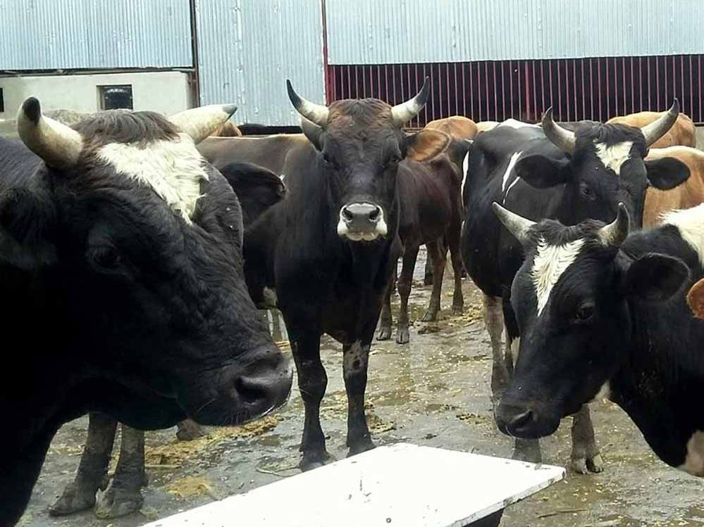

Mission

मठ मन्दिर गाईबाछा बचाउ तथा समाज बिकास अभियान is a non-profit animal welfare organization whose main motto is to rescue abandoned and helpless street cows and give them a life until a new home is found. Our main mission involves:
Located in Pashupati Parisar, the organization receives no funding through government and is run solely through donations from our members and visitors.